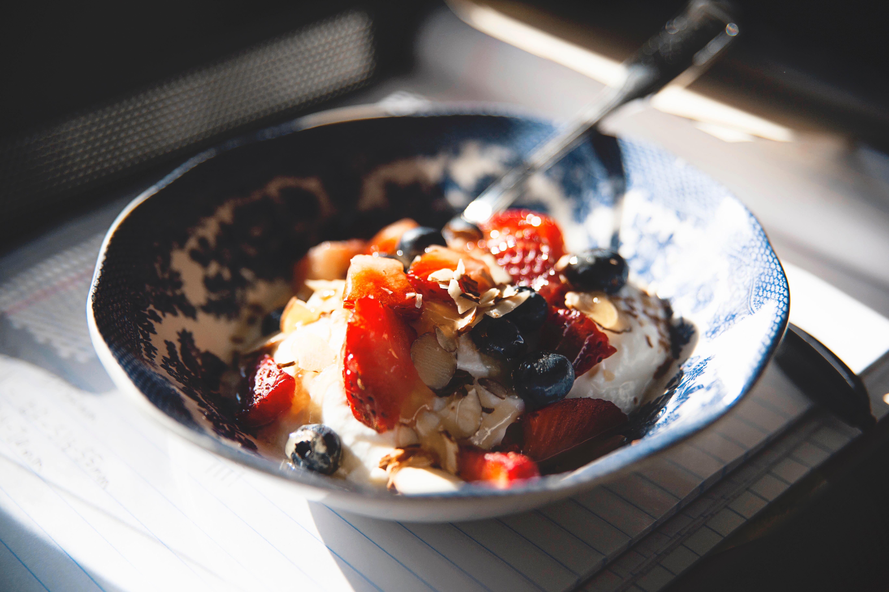

Healthy Desserts
You can read any fitness or health magazine and be bombarded with facts about why sugar is bad, or the only way to live a healthy lifestyle requires cutting out dessert. Additionally, everywhere fitness gurus are promoting their "healthy" alternatives to popular treats, which they claim taste just as good as the real thing.
But if you have a major sweet tooth like me, life just wouldn’t be the same without being able to enjoy desserts like cake, cookies, or ice cream. Unfortunately, the sweet, sugary confections that most of us love to eat are often deemed unhealthy and avoided at all costs. Yet there is hope for dessert lovers everywhere! Contrary to popular belief, dessert can have certain health benefits.

Dessert is not only delicious, but it also helps you keep a balanced diet. Eating healthy doesn't mean only eating tons of vegetables. In fact, dessert can actually help you receive your daily amount of required nutrients.
You can get your daily serving of two cups of fruit from fruit pies and smoothies. Cheesecakes, ice cream, and parfaits provide valuable amounts of protein and calcium. The daily requirement of calcium is between 1,000 and 1,200 milligrams. A half-cup serving of chocolate ice cream contains 72 milligrams of of this essential mineral.
CLASSIC MEALS
Besides it’s amazing taste and culinary uses, broth is an excellent source of minerals and is known to boost the immune system (chicken soup when you are sick anyone?) and improve digestion. Its high calcium, magnesium and phosphorus content make it great for bone and tooth health. Bone broth also supports joints, hair, skin and nails due to its high collagen content. In fact, some even suggest that it helps eliminate cellulite as it supports smooth connective tissue.
Fermented foods have been through a process of lactofermentation which preserves the vegetables and creates vitamins, enzymes and beneficial bacteria.
“Cultures around the world have been eating fermented foods for years, from Sauerkraut in Germany to Kimichi in Korea and everywhere in between. Studies have even shown the link between probiotic rich foods and overall health (PDF).Sadly, with the advances in technology and food preparation, these time-honored traditional foods have been largely lost in our society.”
VEGAN
A vegan diet is part of a lifestyle that excludes the consumption or use of any products made from animals.
Vegans do not eat animal products, including honey, eggs, gelatin, or dairy. They will not use clothes, soaps, or other products that are animal-sourced in any way.
A vegan diet can be a highly nutritious choice, as it is low in saturated fat and rich in nutrients. However, starting out on an animal-free diet without proper planning can lead to some health risks.
All protein, vitamins, and minerals must come from non-animal sources, so food choice and preparation are important.
A 2016 poll suggests that around 2.5 percent of people in the United States follow a vegan lifestyle.
This MNT Knowledge Center article will discuss the differences between veganism and vegetarianism, the health benefits of a vegan diet, and important things to consider before starting. We will also share some tasty vegan meal options and recipes.
DESSERTS
A SWEET TOOTH IS MEANT to be satisfied—yes, even if you're watching your weight. Dessert, after all, is one of life's pleasures, and deprivation typically backfires. It doesn't have to be a high-calorie, high-fat disaster, either: The trick is making smart choices and substitutions. "Take advantage of foods that are naturally sweet and simply delicious," says registered dietitian Keri Gans, author of The Small Change Diet. Steer clear of fatty ingredients like creamy whipped topping or butter, and stick with fresh fruit and low-fat choices.
When you select natural sources of sugar they usually include healthy nutrients alongside their sweet counterparts. Dairy products, fruits and veggies all provide natural sugars in addition to fiber, antioxidants, vitamins, minerals and hydration.
When you select natural sources of sugar they usually include healthy nutrients alongside their sweet counterparts. Dairy products, fruits and veggies all provide natural sugars in addition to fiber, antioxidants, vitamins, minerals and hydration.